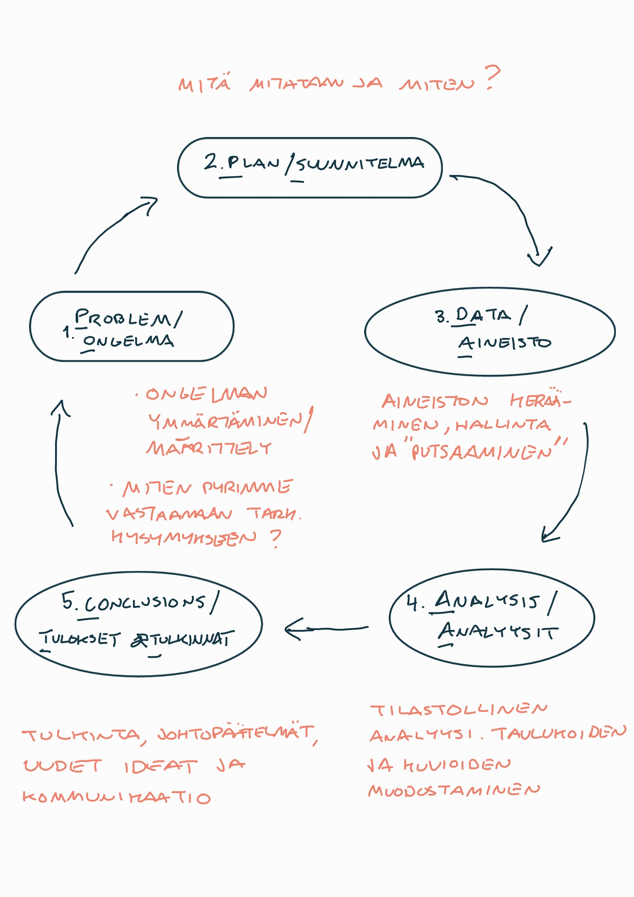

1 title: “Johdantoa tilastotieteeseen”
Ihmisellä on luontainen pyrkimys ymmärtää, mitä hänen ympärillään tapahtuu. Ymmärrys perustuu ihmisen tekemiin havaintoihin, joita luokittelemalla tai seuraamalla hän pyrkii löytämään säännönmukaisuuksia. Näiden säännönmukaisuuksien löytäminen vaatii loogisten johtopäätösten tekoa. Pelkän uteliaisuuden tyydyttämiseen ja älyllisen mielihyvän lisäksi ihminen pyrkii ennakoimaan tulevaa ja siten varautumaan tuleviin tapahtumiin… Edellä kuvattuja taitoja voi oppia.
(Holopainen ja Pulkkinen, 2008)
Getting the Odds on Your Side
(Marks, 2020)
Huom. 1: Tämän kurssin materiaalissa määritellään useita eri termejä ja (tilastollisia) kokonaisuuksia. Vaikka näiden (riittävän tarkkaan) oikeellisuuteen pyritään, niin monessa kohtaa tehdään yksinkertaistuksia ja vältetään kovin matemaattista esitystapaa, mikä paikoin olisi välttämätöntä tarkan määritelmän antamisen kannalta.
Huom. 2: Tämänkaltaisessa luentomonisteessa olisi hyödyllistä ja tyylikästä numeroida yhtälöitä, kuvioita ja taulukoita niiden esiintymisjärjestyksessä ja tehdä niihin viittauksia. Tämän materiaalin pohjalta on kuitenkin luotu luentovideoita, jolloin niiden toiminnan ja pidemmän aikavälin käytettävyyden kannalta on järkevää toimia tässä yhteydessä ilman numerointia yhtälöiden ja sivunumeroiden osalta.
1.1 Tilastotiede ja kurssin idea
Tämän tilastotieteen ensimmäisen kurssin ideana on (ainakin)
- Esitellä ja johdatella tilastolliseen ja tieteelliseen ajatteluun ja sen hyödyntämiseen eri tyyppisissä tutkimusongelmissa.
- Esitellä tilastotieteen roolia empiirisen tutkimusaineiston keräämisessä ja analyysissä sekä tarkastella tieteentekemisen ja tilastotieteen suhdetta.
- Pohtia tilastotieteen olemusta tieteenalana ja tarkastella tilastotieteen ja datatieteen (data sciencen) samankaltaisuuksia ja eroja.
- Pohtia sattuman ja satunnaisuuden roolia jokapäiväisessä elämässä ja erityisesti osana tieteellistä tutkimusprosessia.
- Oppia tilastotieteen peruskäsitteitä ja (tilastollisen) tutkimuksenteon alkeita ja siihen liittyviä mahdollisia ongelmia esimerkiksi tilastollisten aineistojen keräämisessä.
- Oppia tilastollisten aineistojen kuvaamisen ja käsittelyn alkeita sekä tilasto(tieteellisen)llisen mallintamisen ja koeasetelmien peruskäsitteitä.
Kurssilla käsitellään myös tilastollisen päättelyn peruskäsitteitä ja perusteita, kuten
- Mitä on todennäköisyys ja miten se tulkitaan tilastotieteessä sekä laajemmin tieteessä. Erityisesti tilastotieteen osalta keskiössä on tämän kurssin osalta satunnaismuuttujat sekä niihin liitettävät käsitteet, kuten odotusarvo, varianssi ja kahden (tai useamman) satunnaismuuttujan korrelaatio ja mahdollinen kausaalinen yhteys.
- Satunnaismuuttujien todennäköisyysjakaumien perusteita ja niiden yhteyksiä mm. normaalijakaumaan ja muutamiin muihin keskeisiin jakaumiin.
- Tilastollinen malli työkaluna satunnaismuuttujien formaalissa mallintamisessa ja päättelyssä. Tilastollisiin malleihin liittyy (usein) parametreja joihin tilastollinen päättely kohdistuu.
- Tilastollisten mallien estimoinnin perusidea, eli miten tilastollisen mallin tuntemattomille parametreille muodostetaan arvot käytettävissä olevan aineiston pohjalta. Esimerkiksi: mitä tarkoittaa tilastollisen mallin parametrin estimaattori, sen tarkentuvuus ja harhattomuus.
- Alustavia tarkasteluja tilastollisen malliin liitettävän uskottavuuden käsitteelle.
Toinen kurssin keskeisistä teemoista on tarkastella tieteellistä tutkimusprosessia teoriassa ja käytännössä tilastotieteen näkökulmasta. Tämä sisältää mm. seuraavia aiheita, joita siis käsitellään tällä kurssilla päällisin puolin varsin yleisestä näkökulmasta katsoen ja tarkemmat yksityiskohdat jätetään tätä kurssia seuraavien tilastotieteen kurssien aihepiireiksi:
Tutkimusongelman asettaminen. Mitä halutaan tutkia?
Tutkimusongelman täsmentäminen ja tutkimusstrategian laatiminen. Millä keinoin asetettuun tutkimusongelmaan voidaan vastata?
Tutkimusaineiston (tai vain lyhyemmin aineiston eli datan) kerääminen
- Aineiston ennakkoehdot: mitkä ehdot tulee täyttyä, jotta asetettuun tutkimusongelmaan voidaan vastata?
- Otanta (ja mittaaminen): miten tutkimusaineisto kerätään niin, että se täyttää hyvältä aineistolta vaadittavat ehdot? Erilaisissa tutkimuksissa käytetään erilaisia aineistoja kuten:
- Survey- eli haastatteluaineistot: aineisto kerätään haastattelemalla tutkimuskohteita
- Rekisteriaineistot: aineisto on kerätty valmiiksi rekisteriin ja sitä käytetään tutkimukseen
- Aikasarja-aineistot tai pitkittäisaineistot: useita mahdollisesti korreloituneita havaintoja samoista tutkimuskohteista eri ajanhetkiltä
Aineiston kuvaaminen: minkälaista aineistoa on kerätty ja vastaako se ennakkoehtoja?
Aineiston tilastollisen analyysin lähtökohtia:
- Mitä tilastollista mallia/malleja käytetään?
- Mitä tarkoitetaan mallien tuntemattomien parametrien arvojen estimoinnilla?
- Tilastollinen päättelyn perusteita
Johtopäätelmien tekeminen tilastollisen päättelyn pohjalta: saatiinko tutkimusongelmaan vastaus ja kuinka luotettava saatu vastaus on?
1.2 Tilastollinen lukutaito ja OSAAT-analyysisykli
Tilastotieteellä on pitkä ja menestyksekäs historia. Parhaillaan se on kuitenkin nyt muuttumassa laajojen tilastoaineistojen saatavuuden kasvaessa ja laajentuessa myös sellaisille aluille, joiden yhteydessä ei tilastollisia analyysejä ole vielä juurikaan tehty.
Tilastollinen lukutaito (datalukutaito) on keskeinen taito nykymaailmassa. Tämän jatkumona omatoiminen kyky ja taito tehdä tilastollisia analyysejä on tärkeää myös monille muille kuin tilasto- ja datatieteilijöille. Näiden huomioiden myötä myös tilastotieteen opetus on, ainakin joltain osin, muuttumassa lähinnä vain matemaattisiin menetelmiin keskittymisestä ja menetelmälistoista sellaiseen esitystapaan, mikä perustuu ongelma-ratkaisu-sykliä vastaavaan esitystapaan.
- Sukupolvien ajan opiskelijat ovat “vastaanottaneet” varsin kuivia tilastotieteen (perus)opintokursseja, jotka tyypillisesti pitivät sisällään suuren joukon erilaisia tekniikoita, ja muutamia niihin liittyviä sovelluksia, keskittyen enemmän tilastomatemaattiseen esitystapaan.
Tätä muutosta korostaa myös oheinen (englanniksi) ns. “PPDAC-sykli”, mikä voidaan hieman vapaasti mutta myös osuvasti kääntää suomeksi “OSAAT-sykliksi”, ja sitä käsitellään ja siihen palataan koko tämän kurssin materiaalin aikana.
PPDAC/OSAAT-syklin (Spigelhalter, 2020, kuva 0.3) ensimmäiset kaksi vaihetta ovat (1.) ongelman määrittely ja (2.) tutkimuksen toteuttamisen suunnittelu.
Tilastollinen tutkimus, kuten kyselytutkimus, alkaa aina kysymyksellä. Useimmiten tämä merkitsee pyrkimystä koota mahdollisimman paljon ja mahdollisimman tarkkaa tietoa. Huom: On usein houkuttelevaa ohittaa huolellisen suunnitelman tarve.
Ts. kyse on tiedon tarpeesta (jotakin ilmiötä koskien), mikä johtaa osaltaan myös samalla ongelman määrittelyyn.
Esimerkiksi puiden lukumääriä laskeneet ihmiset kiinnittivät pikkutarkkaa huomiota tarkkoihin määritelmiin ja siten siihen miten mittaukset tehdään, sillä luotettavat johtopäätökset voidaan tehdä vain tutkimuksesta, joka on asianmukaisesti suunniteltu.
Kohdan 2 voidaan nähdä sisältävän myös kirjallisuuteen perehtymisen sekä tutkimuksen toteutuksen tarkemman suunnitelman, kuten sopivan otantamenetelmän valinnan.
Valitettavasti, usein kiireestä johtuen, saatujen tietojen (ts. data, kohta 3) jälkeen on suuri houkutus aloittaa tilastolliset analyysit (4.) ilman, että mietitään tarkemmin mihin (ja miten) vastauksia haetaan.
- Otanta voidaan nähdä myös osaksi kohtaa 3.
Pääpaino tilastotieteen (perus)kursseilla on perinteisesti ollut lopulta analyysivaiheessa (kohta 4) menetelmälistojen läpikäynnin jälkeen. Tällä kurssilla esitellään muutamia keskeisiä analyyttisiä tekniikoita, joita tilasto- ja datatieteessä voidaan käyttää, kuten aineiston visualisoinnissa ja regressioanalyysin perusteita. Nämä liittyvät tilastolliseen mittaamiseen ja laajemmin data-analyysin toteututtamiseen.
Kohta 5: Hyvä tilastotiede perustuu perusteltujen johtopäätösten tekemiseen ja tulosten raportointiin, jotka tunnustavat saatujen empiirisen “todistusaineiston” rajoitukset ja välittävät ne selkeästi, esimerkiksi graafisten esitysten avulla.
- Johtopäätökset herättävät yleensä lisää kysymyksiä, jolloin syklin kierto alkaa alusta.
Vaikka PPDAC/OSAAT-sykliä ei aina noudateta, eikä edes voida noudattaa, tarkasti, se korostaa tilastollisen analyysin muodollisten tekniikoiden merkitystä tilastotieteilijän tai datatieteilijän työssä. Tilastotiede on siis selvästikin paljon enemmän kuin matematiikan haara, johon liittyy “esoteerisia” kaavoja, joiden kanssa eri sukupolvet ovat usein kamppailleet osana yliopisto-opintojaan!
1.3 Tilastotieteen asema tutkimusyhteisön ulkopuolella
Tilastotiede on oppiaineena usein varsin tuntematon toisen asteen opinnoista valmistuneelle, sillä sitä ei juurikaan opeteta lukioissa (ja/tai ammattikouluissa) pl. tilastojen ja todennäköisyyslaskennan perusteet (joihin myös palataan tämän materiaalin aikana) huolimatta tilastotieteen keskeisestä ja kasvavasta roolista tieteenteossa.
Tiedeyhteisön ulkopuolellakin tilastotiedettä ja tilastotieteilijöitä tarvitaan ja arvostetaan laajalti!
Tilastotiede on nostanut profiiliaan viimeisten vuosikymmenien aikana tietoteknisen kehityksen tuotua laajat tietoaineistot ja kehittyneet laskennalliset menetelmät lähes jokaisen käyttäjän ja viime kädessä kansalaisen saataville.
Tämä “datavallankumous” näkyy tilastotieteilijöiden kysynnässä työmarkkinoilla: erilaisten aineistojen laajentuessa ja määrän lisääntyessä kasvaa myös kysyntä työntekijöistä, jotka osaavat ammatitaitoisesti käsitellä (ml. koodaamistaidot), tulkita ja mallintaa tilastollisia aineistoja.
Ei siis liene ihmekään, että erilaisten “data”-alkuisten työpaikkojen, kuten datatieteilijä (eng. data scientist) tai data-analyytikko (data analyst) määrä on kasvanut voimakkaasti jo pidempään. Kaikkia tieto- ja dataintensiivisten ammattien tekijöitä yhdistää yksi tekijä: heidän tulee hallita ja osata tilastotiedettä!
- Karkeasti yksinkertaistaen, mitä paremmin ja enemmän (laajemmin), sen parempi palkka ja monipuolisemmat työtehtävät!
1.4 Kurssin luonne tilastotieteen opintojen esittelijänä
Kurssin mittaan esitellään tilastotieteen perusteiden lisäksi miten Turun yliopistossa tilastotieteen opinnoissa syvennytään tällä kurssilla lyhyesti esiteltäviin menetelmiin, aineistotyyppeihin ja mallinnuskokonaisuuksiin.
- Tilastotieteen opintotarjontaan voi perehtyä TY:n opinto-oppaan avulla (ks. Matematiikan ja tilastotieteen laitos, vuosien 2024–2027 opinto-opas. Tarkista ja varmista, että käytät aina uusinta opinto-oppaan versiota)
- Ks. lisäksi Turun yliopiston tilastotieteen keskuksen opetusta koskevat sivut:
Kaiken kaikkiaan tämä materiaali käyttää reaalimaailman esimerkkejä ja ongelmanratkaisua lähtökohtana tilastollisten menetelmien ja ideoiden käyttöönotolle. Jotkut näistä ajatuksista voivat tuntua itsestään selvältä, mutta jotkut ovat hienovaraisempia ja saattavat vaatia jonkin verran ponnistelua, vaikka kovin pitkälle meneviä matemaattisia taitoja ei tarvita.
Perinteisiin tilastotieteen perusopintojen materiaaleihin verrattuna tämä kurssi keskittyy käsitteellisiin kysymyksiin, ei niinkään tilastomatemaattisiin ja teknisiin yksityiskohtiin, puhumattakaan pitkistä listauksista erilaisista tilastollisista menetelmistä ja testeistä.
Kurssin ja tämän materiaalin esimerkeissä käytetään ajoittain R/RStudio -ohjelmointikieltä. Mitä tahansa muutakin ohjelmaa, kuten Pythonia tai Stataa, voi hyvin myös käyttää, mutta kurssimateriaali siis “tukee” nimenomaan R:ää. R-kielen alkeita koskevan peruskurssin käymistä suositellaan tämän materiaalin aikana, mutta toisaalta tämä materiaali ei kuitenkaan varsinaisesti vaadi R/RStudion käyttämistä ja hallintaa.